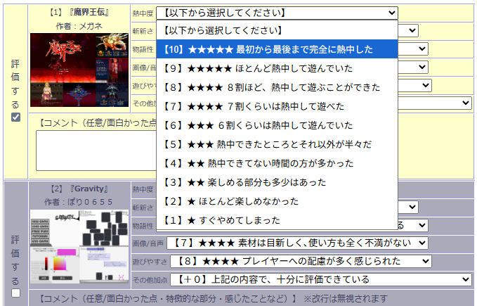
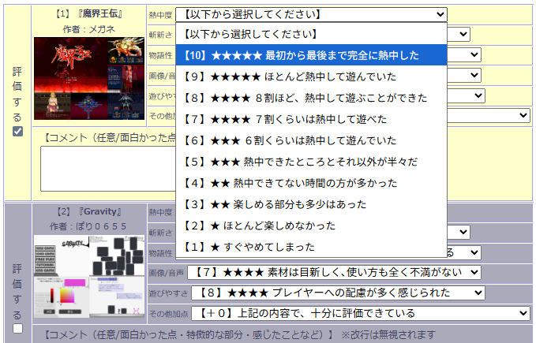

■2025-07-26 (土) 第17回ウディコン審査期間開始！ ＆ 規約の補足▼
ということでウディコン開催から2週間！ 先週から審査期間が始まっております！
【ウディコン公式サイトへ】

先週から第17回ウディコンの審査期間が始まりました！ 今回はお盆休みを挟んで1ヶ月間の審査期間をご用意しております！
一般審査について説明させていただきますと、「熱中度」「斬新さ」「物語性」「画像/音声」「遊びやすさ」「その他」の6部門に1～10点の点を付けます！
点の付け方の目安は書いてありますのでそれに沿ってくださると他の人とも指標が合いやすいと思います！
↓これはウディコン歴史資料館の投票見本ページ。得点ごとに、点の付け方の目安が書いてあります。

一般審査はいつでも途中セーブ可能、途中再開可能ですので、よければ徐々に審査していっていただけますと幸いです！
4作品以上審査すると得点に反映されます。
なお1点と10点ばっかり入ってるみたいな「得点操作を疑う極端な投票をしている」と自動判定された投票は得点計算に反映されなくなってしまいますのでご注意を！
といっても、アウトになるのは極端さ上位の方の5％くらいで、95％の方には影響ありません。その判定も一律、自動で行われるようになっています。
今年のウディコンも「よくできてる～！！」「うおおおあの作者さまだー！！」などテンション上がったり「こんなんアリなのか！？」「ああーこういうゲーム遊びたいと思ってた！」などの感情が湧いたりと全体的にワクワクできる内容だと思います！
当然ながらリピート参加してくださってる方はだんだん腕が上がっている方が多くて、成長を見るのも楽しみです！ 同じ作家さんの成果物の差分を見られるので「こういううまくなり方があるのか！」と思ったところは私も吸収していきたいです！
そして以下はイラストや応援動画のご紹介！
皆さまからの応援のお気持ちとそれを形にされた熱意、本当にありがとうございます！
（審査中なので、特定作品の名前が載ってるものは紹介は控えていますが、そうと分からないイラストや全作品紹介は取り上げさせていただいております！）
これ以外にもたくさんの応援、ご支援、本当にありがとうございます！
いつも大変なウディコン運営ですが、皆さまのお声がとても励みになっています！
そして今回は追加で規約のお話！
「内容のパロディが過ぎる作品があるけどエントリー禁止にならないの？」という話題！
まず二次創作については規約上、『ネタ元のキャラ名と見た目が一致する』『ネタ元の作品名が出ている』など100％明確と分かる問題があるか、あるいは『ロゴやタイトルなどが明らかにパロディである』など知名度を利用しようとしているアンフェアな場合は、エントリー停止措置をとらせていただくことになっています。
ですが、ゲームの『内容』部分のパロディについては
「露骨なパロディはエントリー禁止にはしないけどグレーゾーンだから避けてね！！」
という言及だけにとどめています。
これは内容面において作者さまが萎縮(いしゅく)せずに創作できるようにするためのルールで、突き詰めればどんなゲームだって何かの模倣になっちゃうので『どこからセーフでどこからアウトなんだよ！』ってのが極めて説明しにくいからですね！ 分野別への言及も無数に出てきちゃいますし。
ですがガバガバのまま放置してるつもりはなく、露骨なパロディをしてる作品は一般審査時に自然とネガティブ評価を受けやすくなるので、それが実質的な『ペナルティ』になると考えています。
「斬新さ」が非常に低くなるのはよくあることで、悪質度が高いと「熱中度」「その他」部門でも低得点を付けられる頻度が明らかに増加します。まあ元作品の影が常時チラ付いていたらそんな気持ちにもなりますよね。
そのため、明らかに商標権や著作権を侵害しているなどの明確な問題がない限りは、『内容』のパロディについてはいったん一律でエントリーは通して、良くなさそうな場合の得点への影響は皆さんのご意志にお任せする、という判断で運用しています。
運営側としては、あいまいにセーフ・アウトの線引きをすると確認作業の面でも心理面でもあまりに負担が大きすぎるのと、先にも言った通り、作り手の皆さまの『萎縮』を招くので、『内容』面のパロディや二次創作に関しては100%アウトな証拠がない限りはエントリー停止措置は基本的にしないつもりです。
持続的な運営のため、この点については皆さまに評価をあおぐ形でラクをさせていただいてしまいますが、どうかご協力よろしくお願いいたします。
もちろんフレーバー程度の模倣なら全然いいと思いますので厳しくしすぎる必要はありませんからね！？ これまで通り、自然な気持ちでの評価をお願いいたします。
【その他の問題 模倣は追い切れない / ルールで裁くのが難しい】
そしてまた、『ゲーム』の模倣でしたら私にもいくらか知識があるのでまだ対応できたとしても、『別ジャンルのマイナーすぎる元ネタ再現』だったらそうと知らずみなさんに許容されちゃったりもするので、それも難しい問題なんですよね。
それも含めて私一人では公平な対応ができないので、それも『内容』の模倣度にかかわらずエントリー停止にしない理由の一つになっています。
たとえば「これと完全に一致します！」とか言われて架空の作品を挙げられてしまっても、私が知らなければ本当だと信じてしまってエントリー停止にしちゃうかもしれませんからね！
当然、もしパロディの悪質度が増していった場合はルールを増やさなければなりませんが、皆さまの善意で回せる限りはそれで回した方が、より円滑な運営ができます。そしてまた、作品をご応募される皆さまにとっても安心できる状態が維持できるはずです。
私だって倫理ガチガチなコンテストや、少しでもパロディ判定されたらエントリー禁止になるコンテストなんて怖くて目指したくないですからね！
という感じで、コンテストをやるようになっていっぱい調べれば調べるほど、『模倣』の問題は難しいと感じさせられます。
現実的には多くの場合、創造性の発展が阻害されるのでかなり甘めに判定されるケースが多く、仮に裁判沙汰になっても『模倣』で罰するべきかどうかの判断はかなり慎重に、ゆるめに行われるようです。
これはウディコンでの判断と同じく、まさに『ヘタに法的に罰してしまうと以後の創作の自由が制限されてしまうから』ですね。
だから将来、『ボールを投げてモンスターを捕まえるゲーム』が法的に二度と作れないというわけではないのです！ でも実際は怒られやすかったり、遊び手の人に「いやこれダメでしょ！ ヤベぇ！」と言われちゃうラインではありますよね。
法的には許されても遊び手側には許されないこともあるので、そこがまた『模倣』の難しいところです。
ということで、色々見えないところで悩んだり勉強することになったりもしていますが、ここからも引き続きウディコン運営、がんばっていきます！
ひとまずは審査期間ですね！
ウディタも修正しつつ、ウディコン対応もしつつ、やれる範囲で遊ばせていただきます！
ここに来てウディタの修正も割と頻繁になってきています！ ぼちぼち直していきまーす！
【ウディコン公式サイトへ】
◆第17回ウディコン審査期間、開始！
先週から第17回ウディコンの審査期間が始まりました！ 今回はお盆休みを挟んで1ヶ月間の審査期間をご用意しております！
一般審査について説明させていただきますと、「熱中度」「斬新さ」「物語性」「画像/音声」「遊びやすさ」「その他」の6部門に1～10点の点を付けます！
点の付け方の目安は書いてありますのでそれに沿ってくださると他の人とも指標が合いやすいと思います！
↓これはウディコン歴史資料館の投票見本ページ。得点ごとに、点の付け方の目安が書いてあります。

一般審査はいつでも途中セーブ可能、途中再開可能ですので、よければ徐々に審査していっていただけますと幸いです！
4作品以上審査すると得点に反映されます。
なお1点と10点ばっかり入ってるみたいな「得点操作を疑う極端な投票をしている」と自動判定された投票は得点計算に反映されなくなってしまいますのでご注意を！
といっても、アウトになるのは極端さ上位の方の5％くらいで、95％の方には影響ありません。その判定も一律、自動で行われるようになっています。
◆今年のウディコンはどんな感じ？ Xの応援ご紹介！
今年のウディコンも「よくできてる～！！」「うおおおあの作者さまだー！！」などテンション上がったり「こんなんアリなのか！？」「ああーこういうゲーム遊びたいと思ってた！」などの感情が湧いたりと全体的にワクワクできる内容だと思います！
当然ながらリピート参加してくださってる方はだんだん腕が上がっている方が多くて、成長を見るのも楽しみです！ 同じ作家さんの成果物の差分を見られるので「こういううまくなり方があるのか！」と思ったところは私も吸収していきたいです！
そして以下はイラストや応援動画のご紹介！
皆さまからの応援のお気持ちとそれを形にされた熱意、本当にありがとうございます！
（審査中なので、特定作品の名前が載ってるものは紹介は控えていますが、そうと分からないイラストや全作品紹介は取り上げさせていただいております！）
私がゲーム制作に使用しているウディタのコンテストが今日開催とのことで応援イラスト
— あじるのふ (@ajirunofu) July 12, 2025
エラーを打ち砕いて完成させたゲームはみんなすごい#ウディコン pic.twitter.com/qtIhHrCB6r
『お祭り？』
— farmer (@farmer0919) July 18, 2025
『ちょっと見ていこうよ』
#ウディコン
やりたい演出処理が全部できたぞ！
勝手にウディコン応援！
★お借りした素材★
ハンナ様
へんぷく様
尾羽つばさ様
NoName様
ビデオテープ様
pochi様
ぴぽ様
改めてウディタ規格キャラ素材の層がぶ厚いですわぞ！ pic.twitter.com/n7embbgBjI
この混沌とした感じよ。
— スカイどんぶり (@sky_DONBURI) July 20, 2025
ウディコン、たまんねぇな！#ウディコン pic.twitter.com/hCBDzVZj95
動画投稿。ウディコン実況初めます！
— 九乃頭虫（ここのずむし） (@kuzu_musisan) July 20, 2025
前年に続いてにぎやかし作品紹介をしました。
とっても楽しみ。#ウディコン #ウディコン17
フリーゲームのお祭り、爆開催！【第17回WOLF RPGエディターコンテスト】ウディコン実況 #0【作品紹介】 https://t.co/RIrrCROrxh @YouTubeより
#ウディコン
— ルクコ@絵を描くところ (@rukuko695) July 20, 2025
今年は賑やかしとして参加させていただきます！ pic.twitter.com/BtoGRVaa7P
これ以外にもたくさんの応援、ご支援、本当にありがとうございます！
いつも大変なウディコン運営ですが、皆さまのお声がとても励みになっています！
◆規約の補足【内容のパロディがひどくてもエントリー禁止にならないの？】
そして今回は追加で規約のお話！
「内容のパロディが過ぎる作品があるけどエントリー禁止にならないの？」という話題！
まず二次創作については規約上、『ネタ元のキャラ名と見た目が一致する』『ネタ元の作品名が出ている』など100％明確と分かる問題があるか、あるいは『ロゴやタイトルなどが明らかにパロディである』など知名度を利用しようとしているアンフェアな場合は、エントリー停止措置をとらせていただくことになっています。
ですが、ゲームの『内容』部分のパロディについては
「露骨なパロディはエントリー禁止にはしないけどグレーゾーンだから避けてね！！」
という言及だけにとどめています。
これは内容面において作者さまが萎縮(いしゅく)せずに創作できるようにするためのルールで、突き詰めればどんなゲームだって何かの模倣になっちゃうので『どこからセーフでどこからアウトなんだよ！』ってのが極めて説明しにくいからですね！ 分野別への言及も無数に出てきちゃいますし。
ですがガバガバのまま放置してるつもりはなく、露骨なパロディをしてる作品は一般審査時に自然とネガティブ評価を受けやすくなるので、それが実質的な『ペナルティ』になると考えています。
「斬新さ」が非常に低くなるのはよくあることで、悪質度が高いと「熱中度」「その他」部門でも低得点を付けられる頻度が明らかに増加します。まあ元作品の影が常時チラ付いていたらそんな気持ちにもなりますよね。
そのため、明らかに商標権や著作権を侵害しているなどの明確な問題がない限りは、『内容』のパロディについてはいったん一律でエントリーは通して、良くなさそうな場合の得点への影響は皆さんのご意志にお任せする、という判断で運用しています。
運営側としては、あいまいにセーフ・アウトの線引きをすると確認作業の面でも心理面でもあまりに負担が大きすぎるのと、先にも言った通り、作り手の皆さまの『萎縮』を招くので、『内容』面のパロディや二次創作に関しては100%アウトな証拠がない限りはエントリー停止措置は基本的にしないつもりです。
持続的な運営のため、この点については皆さまに評価をあおぐ形でラクをさせていただいてしまいますが、どうかご協力よろしくお願いいたします。
もちろんフレーバー程度の模倣なら全然いいと思いますので厳しくしすぎる必要はありませんからね！？ これまで通り、自然な気持ちでの評価をお願いいたします。
【その他の問題 模倣は追い切れない / ルールで裁くのが難しい】
そしてまた、『ゲーム』の模倣でしたら私にもいくらか知識があるのでまだ対応できたとしても、『別ジャンルのマイナーすぎる元ネタ再現』だったらそうと知らずみなさんに許容されちゃったりもするので、それも難しい問題なんですよね。
それも含めて私一人では公平な対応ができないので、それも『内容』の模倣度にかかわらずエントリー停止にしない理由の一つになっています。
たとえば「これと完全に一致します！」とか言われて架空の作品を挙げられてしまっても、私が知らなければ本当だと信じてしまってエントリー停止にしちゃうかもしれませんからね！
当然、もしパロディの悪質度が増していった場合はルールを増やさなければなりませんが、皆さまの善意で回せる限りはそれで回した方が、より円滑な運営ができます。そしてまた、作品をご応募される皆さまにとっても安心できる状態が維持できるはずです。
私だって倫理ガチガチなコンテストや、少しでもパロディ判定されたらエントリー禁止になるコンテストなんて怖くて目指したくないですからね！
という感じで、コンテストをやるようになっていっぱい調べれば調べるほど、『模倣』の問題は難しいと感じさせられます。
現実的には多くの場合、創造性の発展が阻害されるのでかなり甘めに判定されるケースが多く、仮に裁判沙汰になっても『模倣』で罰するべきかどうかの判断はかなり慎重に、ゆるめに行われるようです。
これはウディコンでの判断と同じく、まさに『ヘタに法的に罰してしまうと以後の創作の自由が制限されてしまうから』ですね。
だから将来、『ボールを投げてモンスターを捕まえるゲーム』が法的に二度と作れないというわけではないのです！ でも実際は怒られやすかったり、遊び手の人に「いやこれダメでしょ！ ヤベぇ！」と言われちゃうラインではありますよね。
法的には許されても遊び手側には許されないこともあるので、そこがまた『模倣』の難しいところです。
ということで、色々見えないところで悩んだり勉強することになったりもしていますが、ここからも引き続きウディコン運営、がんばっていきます！
ひとまずは審査期間ですね！
ウディタも修正しつつ、ウディコン対応もしつつ、やれる範囲で遊ばせていただきます！
ここに来てウディタの修正も割と頻繁になってきています！ ぼちぼち直していきまーす！
2025-07-26 (土)  カテゴリ: ウディタ
カテゴリ: ウディタ
 カテゴリ: ウディタ
カテゴリ: ウディタ